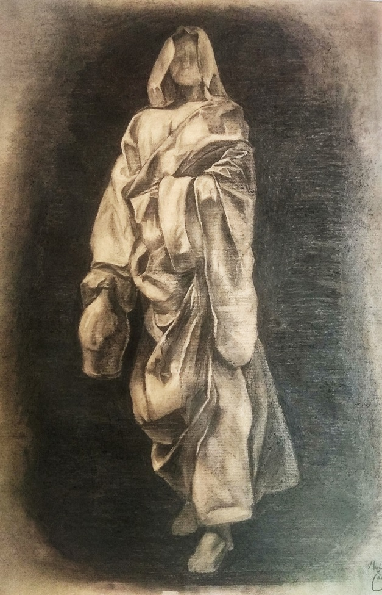
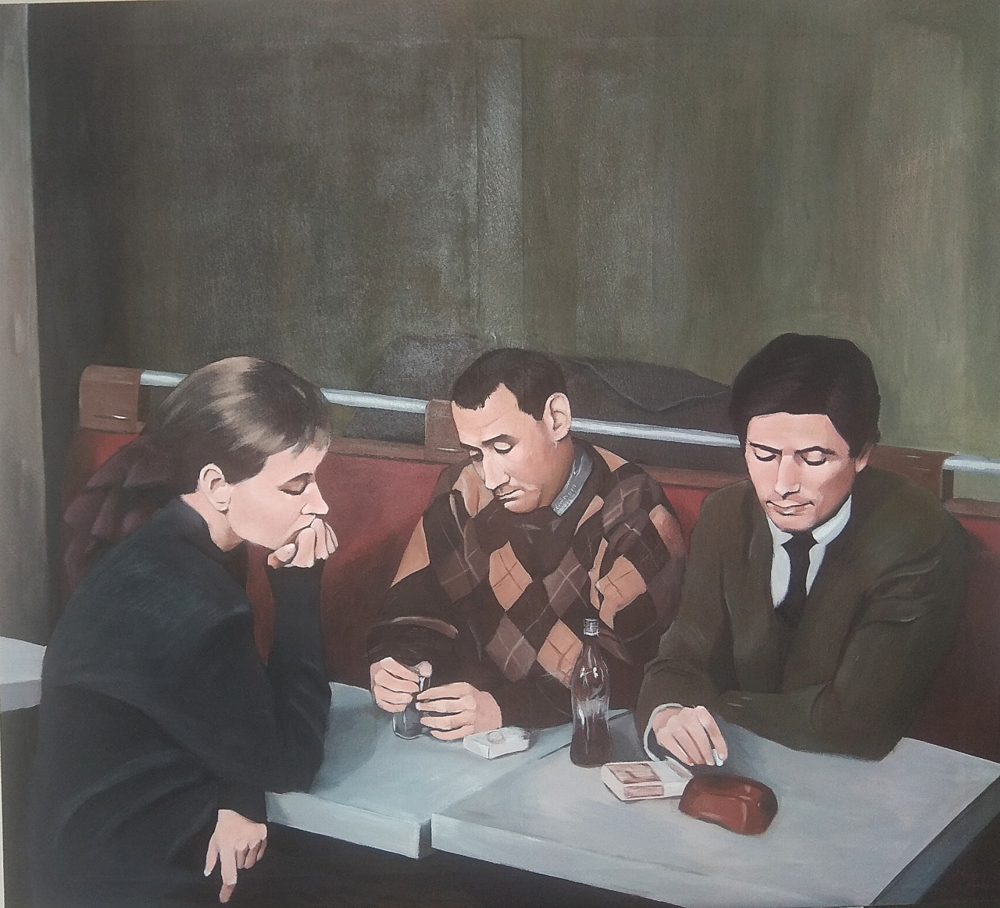
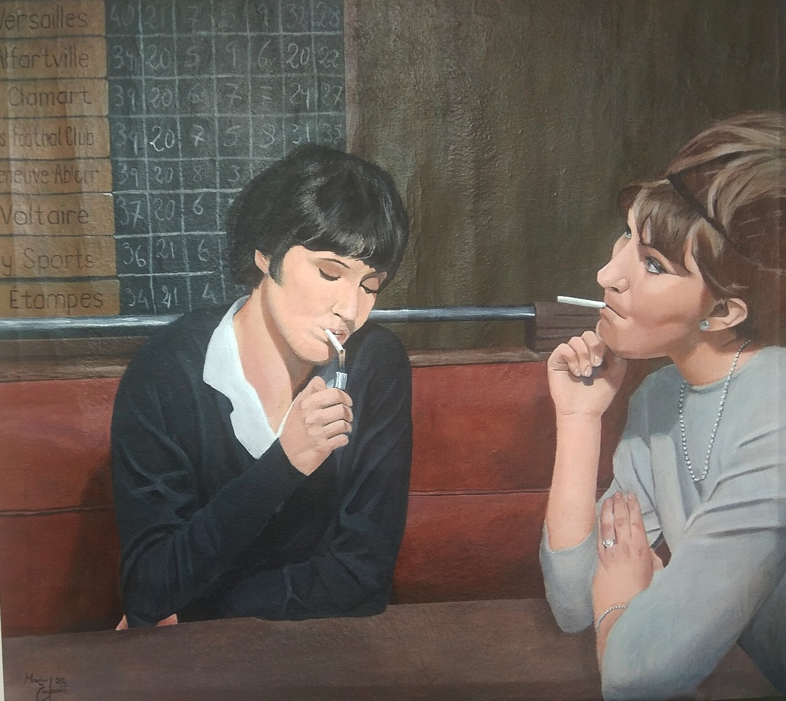
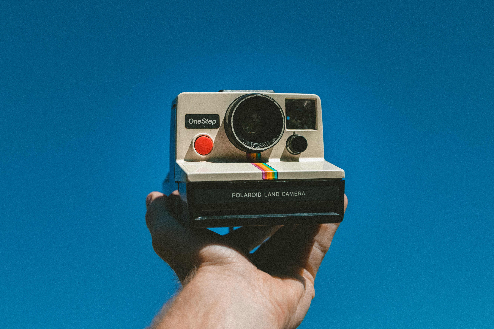
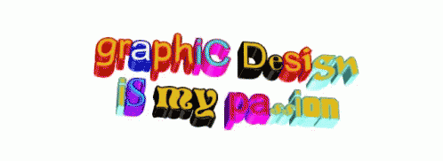

Kliknite gdje se želite vratiti!
Imam 22 godine, studiram dizajn grafičkih proizvoda na Grafičkom fakultetu u Zagrebu.
Prije upisa sam se bavio likovnim slikarstvom i crtanjem u svoje slobodno vrijeme. Evo par primjera!
  No ubrzo sam putem raznih kolegija stekao interes za grafički dizajn i analognu fotografiju (preporučam digitalnu, filmovi su jako skupi).
 Najviše mi se dopadaju psihološki filmovi koji motiviraju gledatelja da sam protumači poruku filma.
Jedan od mojih najdražih kojeg toplo preporučam se čak nalazi i na Youtubeu!